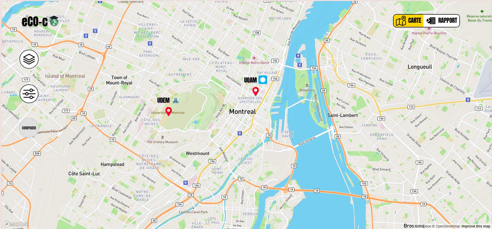
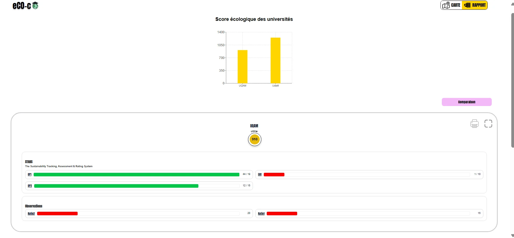
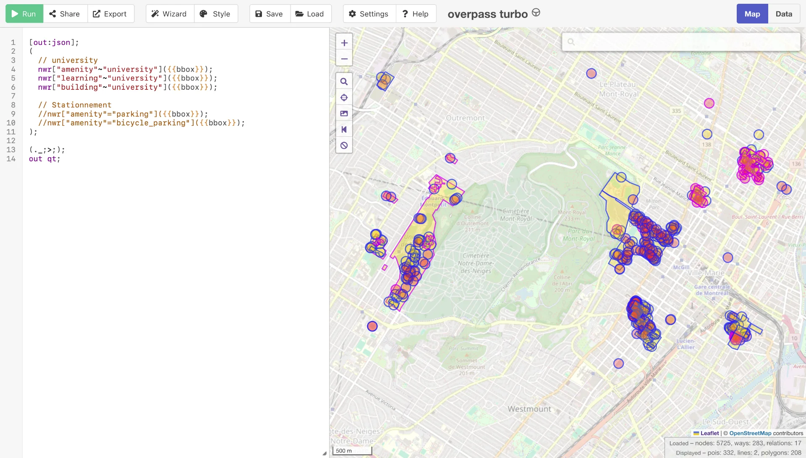
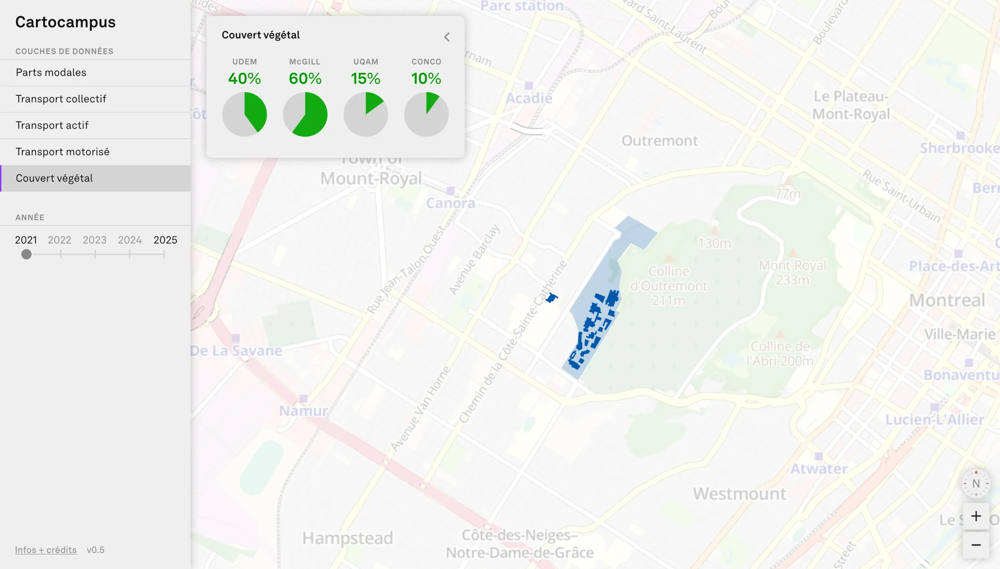

Les premières semaines ont été consacrées à
- explorer le code et les documents de conception existants
- trouver des jeux de données potentiels
- trouver des projets similaires pour servir de référence
- construire une maquette de l’interface
Cette page présente le résultat de cette première phase.
Ce document est la version longue de la présentation effectuée lors de la première en commun du cours, le 2 juin 2026. Les dispositives de cette présentation sont disponibles ici.
Diagnostique du projet original


Le repo du projet original a été exploré, et plusieurs complications ont été notées. En fait, je n’ai pas pu rouler la dernière version du projet sans erreur. Plusieurs clés d’API ont expirées et les comptes ont été perdus. De plus, il semble que certaines branches n’ont jamais été merge. Si bien que nous avons décidé de repartir à zéro pour le frontend. Plusieurs parties du code pourront tout de même être réutilisées.
Je questionne aussi la pertinence du backend. Sauf si on veut permettre aux utilisateurs de modifier les données eux-mêmes, je pense que ça complique l’architecture pour rien. Des données pré-traitées, bien organisées, servies par la même machine que le frontend devraient très bien faire l’affaire pour le moment.
Niveau conception, l’interface utilise très peu la carte, qui est pourtant centrale à l’interface. Je compte remédier à cette lacune en exploitant au maximum cet aspect. Je veux que toutes les données visualisées ou presque soit géoréférencées.
Finalement, on remarque que seules deux universités s’affichent, probablement par manque de données sur les sources choisies. Je veux m’imposer comme contrainte que chaque couche de données doit être disponible au moins sur les 4 grandes universités montréalaises, soit l’UdeM, McGill, l’UQAM et Concordia. Sans ça, je trouve que ce n’est pas assez représentatif.
Toutes ces faiblesses seront adressées dans la nouvelle mouture du projet.
Jeux de données potentiels
Plusieurs sources de données potentielles ont été identifiées.
OpenStreetMap
OSM est une base de données géographiques libre qui fonctionne avec des “tags”. Ces tags prennent des valeurs en chaîne de caractères arbitraires, qui doivent donc être standardisées par la communauté pour être utiles. C’est à la fois la force et la faiblesse du système. Il permet d’ajouter n’importe quelle donnée à un endroit géographique, mais il rend difficile la standardisation à l’échelle de la planète.
Dans un projet à l’échelle planétaire, ce serait quasiment impossible de bien utiliser les données des campus universitaires. Cependant, pour un projet limité à une seule ville et une poignée de sites universitaires, je crois bien pouvoir en profiter.
Les données des différents campus montréalais ne sont effectivement pas parfaitement conformes entre elles, mais ce sera simple de les sélectionner manuellement, et ça en vaudra la peine si ça donne accès à des données qu’on ne retrouve nulle part ailleurs.
Les données d’OSM peuvent être accédées programmatiquement via l’API Overpass. Overpass Turbo permet de tester des requêtes depuis le navigateur. Il est également possible d’explorer les tags directement sur openstreetmap.org en utilisant l’outil “?” sur la droite.
Cette source permet donc minimalement d’obtenir les périmètres et bâtiments des universités. Elle est également un bon choix pour le stationnement pour voiture ainsi que pour vélo, bien que leur exactitude reste à vérifier.
Il serait également possible d’estimer le couvert végétal grâce à OSM, mais je crois que d’autres sources spécialisées seraient meilleures.

[out:json]; ( // Périmètres et bâtiments des campus nwr["amenity"~"university"]({{bbox}}); nwr["learning"~"university"]({{bbox}}); nwr["building"~"university"]({{bbox}}); // Stationnement nwr["amenity"="parking"]({{bbox}}); // Stationnement pour vélo nwr["amenity"="bicycle_parking"]({{bbox}}); ); (._;>;); out qt;
ARTM
L’Autorité régionale de transport métropolitain est l’organisation qui régit le transport de la grande région de Montréal. Elle et ses prédécesseurs réalisent tous les 5 ans depuis 1970 l’enquête Perspectives mobilité (anciennement Origine-Destination). Cette enquête étudie les déplacements des résidents, que ce soit en transport actif, en transport en commun ou en auto.
Ces données peuvent déjà être pertinentes, mais il s’avère que le volet “enseignement supérieur” de l’enquête concerne spécifiquement les campus universitaires. En plus, il est effectué annuellement depuis 2023. Voici la liste des champs de cette source:
- statut
- groupe d’âge
- genre
- cycle d’études
- campus principal
- mode de transports utilisés pour se rendre au campus
- distance domicile-campus
- type de vélo utilisé pour se rendre au campus
- lieu de stationnement (vélo)
- type de véhicule utilisé pour se rendre au campus
- type de carburant utilisé
- compatibilité activité principale avec télétravail
- incitatif de promotion du covoiturage
- possession abonnement annuel ou mensuel (transport en commun)
- types de passe utilisé
- possession abonnement vélo-partage
- possède un vélo dans un bon état
- possède un vélo à assistance électrique
Ce jeu de données devrait régler la question de la part modale des déplacements.
Ville de Montréal
Le site des données ouvertes de la Ville de Montréal offre une centaine de jeu de données géolocalisées. Ceux qui semblent le plus intéressant sont:
- Taux de végétalisation et de minéralisation des surfaces
- Bois
- Canopée
- Îlots de chaleur
- Zones prioritaires à verdir pour diminuer les impacts des vagues de chaleur
Les titres se ressemblent, il faudra donc expérimenter avec les données pour voir lesquelles sont les plus appropriées pour le projet.
Autres
D’autres pistes n’ont pas été explorées pour le moment. Parmi celles-ci, il y a les gouvernements du Canada et du Québec, qui ont chacun leurs données ouvertes. Les universités elles-mêmes ont également des données ouvertes, et certainement des données internes qu’on pourrait demander.
Le rapport Stars, qui était au centre du projet original, pourrait aussi être exploré. Par contre, ces données ne sont pas géolocalisées, et sont donc moins pertinentes à des fins de visualisation. Tout de même, à des fins d’archive, voici les rapports publics des universités montréalaises:
Sites de référence
Les sites de visualisation de données géolocalisées sont nombreux et populaires sur le web. Bien que ce projet ait ses particularités, des sites similaires peuvent être considérées pour accélérer le processus de conception. Cette courte liste a été rapidement assemblée pour servir de référence:
Maquette de l’interface
Une maquette préliminaire a été dessinée à partir de ces références. Celle-ci est sujet à changement au cours du développement. Elle ne sert qu’à donner la direction générale de l’interface.
